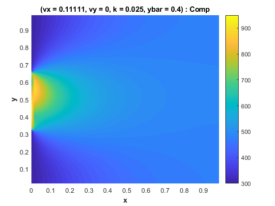
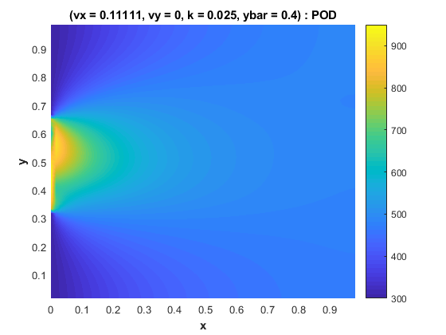

Contents
STEADY ADVECTION-DIFFUSION PROBLEM
Method of snapshots for Greedy approach. Based on CME 345: Model Reduction course of prof. David Amsallem (Stanford University) Oriol Chandre Vila May 2018
clear all; close all; clc; warning('off');
Definition of the problem (domain)
global Nx Ny Lx Ly dx dy x y Ti Tleft; Nx = 61; Ny = 61; Lx = 1; Ly = 1; dx = Lx/(Nx-1); dy = Ly/(Ny-1); x = 0:dx:Lx; y = 0:dy:Ly; Ti = 300; Tleft = 950; % Parameters u [p(1,:)],kappa [p(2,:)], ybar [p(3,:)] % u : advection speed in the x-direction % kappa : diffusivity coefficient % ybar : parameterizing the Dirichlet boundary condition pMin = [0;0.0005;0.4]; pMax = [0.5;0.025;0.6];
Part I: computing the comparison points
nPointsPerDirection = 10; uComp = linspace(pMin(1),pMax(1),nPointsPerDirection); kappaComp = linspace(pMin(2),pMax(2),nPointsPerDirection); ybarcomp = linspace(pMin(3),pMax(3),nPointsPerDirection); nComp = nPointsPerDirection^3; wComp = zeros((Nx-2)*(Ny-2),nComp); pComp = zeros(3,nComp); count = 0; tic for ip=1:nPointsPerDirection for jp=1:nPointsPerDirection for kp=1:nPointsPerDirection count = count+1; %valeur des parametres PDE stockés dans pcomp pComp(:,count) = [uComp(ip);kappaComp(jp);ybarcomp(kp)]; [A,b,TleftBC] = buildAdvectionDiffusionOperators(pComp(1,count),... pComp(2,count),pComp(3,count)); % steady state resolution - inversion K*q=F A*wcomp=b wComp(:,count) = A\(b); end end end disp('Time needed for a Full-Case Solution (s)') t_FullCase = toc
Time needed for a Full-Case Solution (s)
t_FullCase =
9.6756
Part II: computing ROM
disp('------------------------Greedy+POD------------------------------') nTest = 20; [eMax_POD, eAvg_POD, t_POD, wPOD,V]=POD(nTest,wComp, pComp, nComp, pMin,... pMax,nPointsPerDirection, 291); disp('Average errors (%)') eMax_POD = eMax_POD*100 eAvg_POD = eAvg_POD*100 disp('Average time needed (s)') t_POD_Avg = mean(t_POD) % disp('----------------------------DMD--------------------------------') % nTest = 20; % [eMax_DMD, eAvg_DMD, t_DMD, wDMD]=DMD(nTest,wComp, pComp, nComp, pMin,... % pMax,nPointsPerDirection, 291); % disp('Average errors (%)') % eMax_DMD = eMax_DMD*100 % eAvg_DMD = eAvg_DMD*100 % disp('Average time needed (s)') % t_DMD_Avg = mean(t_DMD)
------------------------Greedy+POD------------------------------
Average errors (%)
eMax_POD =
6.3458
eAvg_POD =
0.9270
Average time needed (s)
t_POD_Avg =
1.4876
Graphs
T_Comp = zeros(Ny-2,Nx-2); T_POD = zeros(Ny-2,Nx-2); T_Comp(:) = wComp(:,291); T_Comp = [TleftBC,T_Comp]; T_POD(:) = wPOD(:,1); T_POD = [TleftBC,T_POD]; % T_DMD = zeros(Ny-2,Nx-2); % T_DMD(:) = real(wDMD(:,1)); % T_DMD = [TleftBC,T_DMD]; for i=2:Ny-1 if (y(i)<Ly/3) TleftBC(i-1,1) = Ti; elseif (y(i)>2*Ly/3) TleftBC(i-1,1) = Ti; else TleftBC(i-1,1) = Ti+(Tleft-Ti)*(sin(pi*abs(y(i)-0.4)/(1/3))+1)/2; end end figInt = 0; % Comp Plot figInt = figInt + 1; figure(figInt); surface(x(1:end-1),y(2:end-1),T_Comp,'EdgeColor','none',... 'facecolor','interp','FaceLighting','phong'); axis tight c = colorbar; h = findobj(gcf,'type','line'); set(h,'linewidth',2); set(h,'MarkerSize',10); interp = 'none'; titleStr = ['(vx = ',num2str(pComp(1,291)),', vy = ',num2str(0),... ', k = ',num2str(pComp(2,291)),', ybar = ',num2str(pComp(3,291)),')'... ,' : Comp']; title(titleStr,'Interpreter',interp,'fontweight','b'); xlabel('x','Interpreter',interp,'fontweight','b'); ylabel('y','Interpreter',interp,'fontweight','b'); gca = findall(gcf,'type','axes','visible','on'); set(gca,'FontSize',10); % POD Plot figInt = figInt + 1; figure(figInt); surface(x(1:end-1),y(2:end-1),T_POD,'EdgeColor','none',... 'facecolor','interp','FaceLighting','phong'); axis tight c = colorbar; h = findobj(gcf,'type','line'); set(h,'linewidth',2); set(h,'MarkerSize',10); interp = 'none'; titleStr = ['(vx = ',num2str(pComp(1,291)),', vy = ',num2str(0),... ', k = ',num2str(pComp(2,291)),', ybar = ',num2str(pComp(3,291)),')'... ,' : POD']; title(titleStr,'Interpreter',interp,'fontweight','b'); xlabel('x','Interpreter',interp,'fontweight','b'); ylabel('y','Interpreter',interp,'fontweight','b'); gca = findall(gcf,'type','axes','visible','on'); set(gca,'FontSize',10); % % POD MODES PLOT % POD1 = zeros(Ny-2,Nx-2); POD2 = zeros(Ny-2,Nx-2); POD3 = zeros(Ny-2,Nx-2); % POD4 = zeros(Ny-2,Nx-2); POD5 = zeros(Ny-2,Nx-2); POD6 = zeros(Ny-2,Nx-2); % POD7 = zeros(Ny-2,Nx-2); POD8 = zeros(Ny-2,Nx-2); POD9 = zeros(Ny-2,Nx-2); % POD1(:) = V(:,1); POD2(:) = V(:,2); POD3(:) = V(:,3); % POD4(:) = V(:,4); POD5(:) = V(:,5); POD6(:) = V(:,6); % POD7(:) = V(:,7); POD8(:) = V(:,8); POD9(:) = V(:,9); % figInt = figInt + 1; % figure(figInt); % subplot(3,3,1); % surface(x(2:end-1),y(2:end-1),POD1,'EdgeColor','none',... % 'facecolor','interp','FaceLighting','phong'); % axis tight % c = colorbar; % h = findobj(gcf,'type','line'); % set(h,'linewidth',2); % set(h,'MarkerSize',10); % interp = 'none'; % title('POD: Vector 1','Interpreter',interp,'fontweight','b'); % xlabel('x','Interpreter',interp,'fontweight','b'); % ylabel('y','Interpreter',interp,'fontweight','b'); % gca = findall(gcf,'type','axes','visible','on'); % set(gca,'FontSize',10); % subplot(3,3,2); % surface(x(2:end-1),y(2:end-1),POD2,'EdgeColor','none',... % 'facecolor','interp','FaceLighting','phong'); % axis tight % c = colorbar; % h = findobj(gcf,'type','line'); % set(h,'linewidth',2); % set(h,'MarkerSize',10); % interp = 'none'; % title('POD: Vector 2','Interpreter',interp,'fontweight','b'); % xlabel('x','Interpreter',interp,'fontweight','b'); % ylabel('y','Interpreter',interp,'fontweight','b'); % gca = findall(gcf,'type','axes','visible','on'); % set(gca,'FontSize',10); % subplot(3,3,3); % surface(x(2:end-1),y(2:end-1),POD3,'EdgeColor','none',... % 'facecolor','interp','FaceLighting','phong'); % axis tight % c = colorbar; % h = findobj(gcf,'type','line'); % set(h,'linewidth',2); % set(h,'MarkerSize',10); % interp = 'none'; % title('POD: Vector 3','Interpreter',interp,'fontweight','b'); % xlabel('x','Interpreter',interp,'fontweight','b'); % ylabel('y','Interpreter',interp,'fontweight','b'); % gca = findall(gcf,'type','axes','visible','on'); % set(gca,'FontSize',10); % subplot(3,3,4); % surface(x(2:end-1),y(2:end-1),POD4,'EdgeColor','none',... % 'facecolor','interp','FaceLighting','phong'); % axis tight % c = colorbar; % h = findobj(gcf,'type','line'); % set(h,'linewidth',2); % set(h,'MarkerSize',10); % interp = 'none'; % title('POD: Vector 4','Interpreter',interp,'fontweight','b'); % xlabel('x','Interpreter',interp,'fontweight','b'); % ylabel('y','Interpreter',interp,'fontweight','b'); % gca = findall(gcf,'type','axes','visible','on'); % set(gca,'FontSize',10); % subplot(3,3,5); % surface(x(2:end-1),y(2:end-1),POD5,'EdgeColor','none',... % 'facecolor','interp','FaceLighting','phong'); % axis tight % c = colorbar; % h = findobj(gcf,'type','line'); % set(h,'linewidth',2); % set(h,'MarkerSize',10); % interp = 'none'; % title('POD: Vector 5','Interpreter',interp,'fontweight','b'); % xlabel('x','Interpreter',interp,'fontweight','b'); % ylabel('y','Interpreter',interp,'fontweight','b'); % gca = findall(gcf,'type','axes','visible','on'); % set(gca,'FontSize',10); % subplot(3,3,6); % surface(x(2:end-1),y(2:end-1),POD6,'EdgeColor','none',... % 'facecolor','interp','FaceLighting','phong'); % axis tight % c = colorbar; % h = findobj(gcf,'type','line'); % set(h,'linewidth',2); % set(h,'MarkerSize',10); % interp = 'none'; % title('POD: Vector 6','Interpreter',interp,'fontweight','b'); % xlabel('x','Interpreter',interp,'fontweight','b'); % ylabel('y','Interpreter',interp,'fontweight','b'); % gca = findall(gcf,'type','axes','visible','on'); % set(gca,'FontSize',10); % subplot(3,3,7); % surface(x(2:end-1),y(2:end-1),POD7,'EdgeColor','none',... % 'facecolor','interp','FaceLighting','phong'); % axis tight % c = colorbar; % h = findobj(gcf,'type','line'); % set(h,'linewidth',2); % set(h,'MarkerSize',10); % interp = 'none'; % title('POD: Vector 7','Interpreter',interp,'fontweight','b'); % xlabel('x','Interpreter',interp,'fontweight','b'); % ylabel('y','Interpreter',interp,'fontweight','b'); % gca = findall(gcf,'type','axes','visible','on'); % set(gca,'FontSize',10); % subplot(3,3,8); % surface(x(2:end-1),y(2:end-1),POD8,'EdgeColor','none',... % 'facecolor','interp','FaceLighting','phong'); % axis tight % c = colorbar; % h = findobj(gcf,'type','line'); % set(h,'linewidth',2); % set(h,'MarkerSize',10); % interp = 'none'; % title('POD: Vector 8','Interpreter',interp,'fontweight','b'); % xlabel('x','Interpreter',interp,'fontweight','b'); % ylabel('y','Interpreter',interp,'fontweight','b'); % gca = findall(gcf,'type','axes','visible','on'); % set(gca,'FontSize',10); % subplot(3,3,9); % surface(x(2:end-1),y(2:end-1),POD9,'EdgeColor','none',... % 'facecolor','interp','FaceLighting','phong'); % axis tight % c = colorbar; % h = findobj(gcf,'type','line'); % set(h,'linewidth',2); % set(h,'MarkerSize',10); % interp = 'none'; % title('POD: Vector 9','Interpreter',interp,'fontweight','b'); % xlabel('x','Interpreter',interp,'fontweight','b'); % ylabel('y','Interpreter',interp,'fontweight','b'); % gca = findall(gcf,'type','axes','visible','on'); % set(gca,'FontSize',10); % % DMD Plot % figInt = figInt + 1; % figure(figInt); % surface(x(1:end-1),y(2:end-1),T_DMD,'EdgeColor','none',... % 'facecolor','interp','FaceLighting','phong'); % axis tight % c = colorbar; % h = findobj(gcf,'type','line'); % set(h,'linewidth',2); % set(h,'MarkerSize',10); % interp = 'none'; % titleStr = ['(vx = ',num2str(pComp(1,291)),', vy = ',num2str(0),... % ', k = ',num2str(pComp(2,291)),', ybar = ',num2str(pComp(3,291)),')'... % ,' : DMD']; % title(titleStr,'Interpreter',interp,'fontweight','b'); % xlabel('x','Interpreter',interp,'fontweight','b'); % ylabel('y','Interpreter',interp,'fontweight','b'); % gca = findall(gcf,'type','axes','visible','on'); % set(gca,'FontSize',10); 